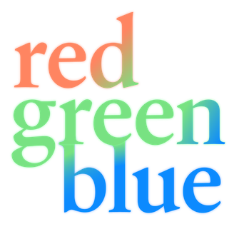

Matthew Smaglik is a New York City based filmmaker, producer, and writer. © 2023 partnered with

In television, he’s currently writing a docudrama series for Netflix with Stephen David Entertainment. Matthew has written and produced several upcoming series working with Blackfin, Six West, Warm Springs, and SDE. He wrote and story produced the 2022 series Titans: Rise of Wall Street for Curiosity Stream and the 2021 mini-series Cars That Build the World for History with Magilla Entertainment.
In feature films, he co-produced Thirst Street which premiered at the Tribeca Film Festival in 2017 and was distributed by Samuel Goldwyn Films. Matthew got his start with Dogfish Pictures where he co-produced Diverge, which won the U.S In Progress top prize. He went on to produce Noble Earth and Sweet Parents. Most recently he produced Senior Love Triangle, based on the TED featured photo series.
Along with writing and producing, Matthew maintains a successful side hustle a graphic designer working with folks like Jax Media, Spoke Studios, CBN, Authentic, Samantha Bee, and Soledad O'Brien pitching and selling tv shows to networks. With an interest in international co-production, Matthew has participated in several prestigious programs including IFP Film Week, the Trans Atlantic Partners program, the Frontières Film Financing Forum in Amsterdam and presented at the Frontières Platform at the Marche Du Film in Cannes.
Often on the road or in the air. Get in touch at matthew@smaglik.com